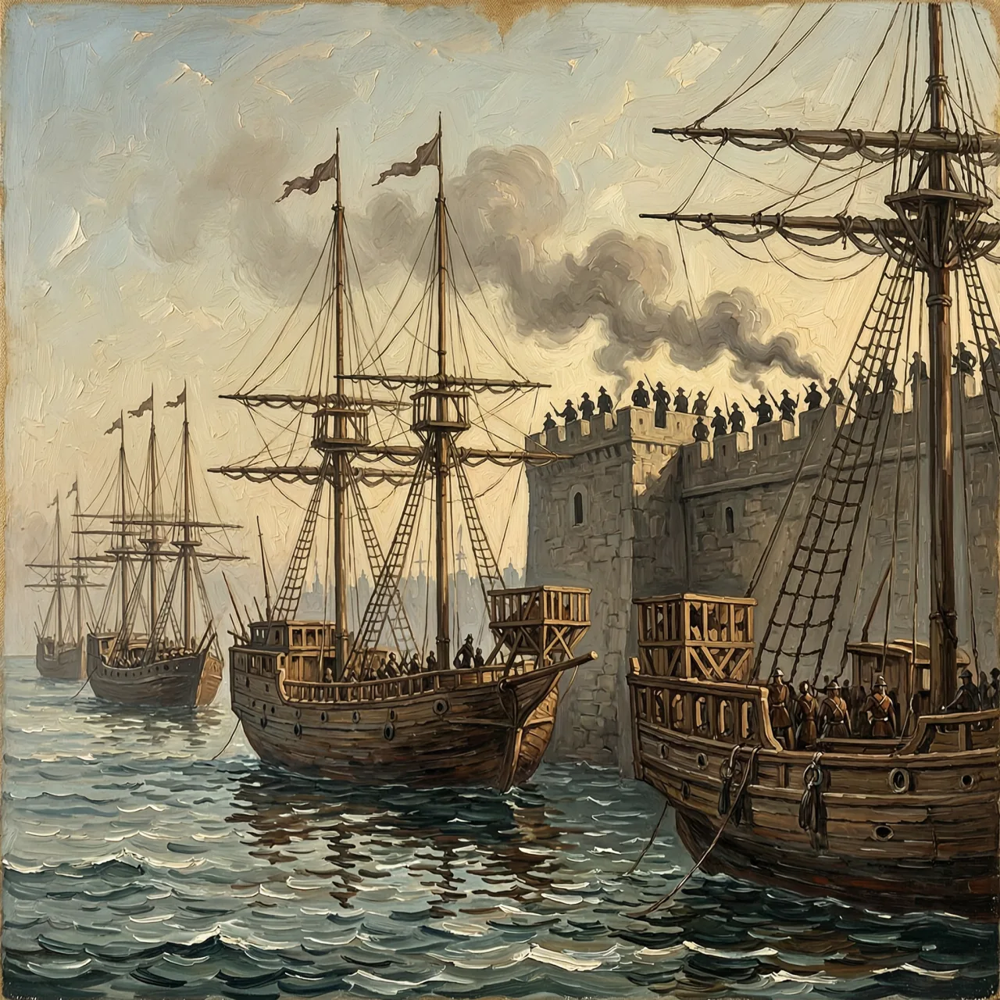

付不出船钱的圣战，如何滑向洗劫基督教世界最大的城市

1202年末，一支本该开往埃及的舰队停在亚得里亚海边，矛头对准的不是穆斯林，而是同样信奉天主教的港口城市扎拉。第四次十字军东征的偏离从这里开始：一路是付不清的钱，和为了抵债一再下调的底线。
发起东征的教皇英诺森三世把目标定在埃及——阿尤布王朝的心脏，先打垮它再取耶路撒冷，当时被看作更可行的打法。运输外包给威尼斯，对方造舰备粮，要价是笔巨款。出发时兵员远少于约定，船钱凑不齐。威尼斯人开出条件：替我们打下对岸的扎拉，欠账抵作路费。扎拉是威尼斯的死对头，但也是一座天主教城市。城破后教皇绝罚参战者，最终不了了之。
1203年初，一个拜占庭流亡王子找上门。阿莱克修斯四世的父亲因政变被废，他许诺：只要十字军送他回君士坦丁堡复位，新朝廷将出钱出兵，把东征送到终点。对缺钱的军队，这几乎无法拒绝。1203年8月，围城得手，父子同登皇位。但王子接手的是被前朝掏空的国库，为兑现承诺加紧征税，民怨在1204年1月炸开——他被废，2月8日被杀。承诺的报酬随他下葬，十字军手里只剩一笔坏账。
讨债的下一步，是把刀口对准城内。1204年4月，十字军攻陷并洗劫了君士坦丁堡——当时整个基督教世界最大的城市。圣战没有抵达圣地，只有极少数人继续上路，东征就此终结。东方基督徒对拉丁西方的疑忌，从此多了一段洗劫自己人的历史。而当初死活收不到船钱的威尼斯，倒成了最实在的获益者。